2．泛函的理论
泛函的抽象理论是由沃尔泰拉在他关于变分法的工作中开始的，他关于线（曲线）的函数（他自己是这样称呼的）的工作，包括了好几篇论文(1)。对沃尔泰拉来说，一个线的函数是指一个实值函数F，它的值取决于定义在某个区间［a，b］上的函数y（x）的全体函数值。这些函数本身被看作一个空间的点，而对于这空间，可以定义点的邻域和点列的极限。对于泛函
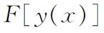
，沃尔泰拉引进了连续、微商和微分的定义。然而，这些定义对于变分法的抽象理论是不适用的，因而被废弃了。他的定义事实上受到了阿达马的批评(2)。所有定义在某个区间上的函数的全体，可以看作空间的点，这样一种概念，甚至在沃尔泰拉开始他的工作以前，就已经有人提出了。黎曼在他的学位论文中(3)，说到了某些函数的全体组成（空间中点的）连通闭区域。阿斯科利（Giulio Ascoli，1843—1896）(4)和阿尔采拉(5)探求把康托尔的点集论推广到函数集合上，从而把函数看成一个空间的点。阿尔采拉还说到线的函数。阿达马在1897年的第一次世界数学家大会上提出(6)，曲线可以看成一个集合的点。这时他是在考虑定义在［0，1］上的全体连续函数所成的族，即出现在他的偏微分方程论文中的一个函数族。波莱尔为了不同的目的，也作过相同的提示(7)，这就是借助于级数来研究任意函数。
阿达马由于变分法上的原因也开创了泛函的研究(8)。泛函的名称就是属于他的。根据阿达马，泛函
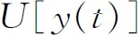
是线性的，如果当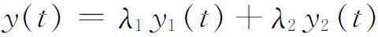
时，便有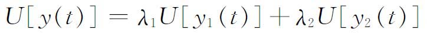
，其中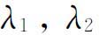
是常数。在建立函数空间和泛函的抽象理论中，第一个卓越的成果，是由法国的领头数学教授弗雷歇（Maurice Fréchet，1878—1973），在他1906年的博士论文(9)中取得的。弗雷歇在他的所谓泛函演算中，力图把康托尔、沃尔泰拉、阿尔采拉、阿达马和其他人工作中的思想，以抽象的术语统一起来。
为了使他的函数空间获得最大程度的一般性，弗雷歇采纳了由康托尔发展起来的集合论的整套基本概念，虽然对弗雷歇来说，集合中的点是函数。他还把点集的极限的概念比较一般地确切陈述出来。这个概念没有明显地定义，但是用很一般的性质刻画了出来，足以包括弗雷歇在具体理论中所出现的并力图将其统一的各种类型的极限。他引入了一类L空间，L表示对这类空间的每一个，极限概念都是存在的。例如，如果A是类L中的一个空间，而
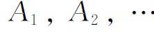
是从L中随意选出的元素，则必须有可能去确定，是否存在唯一的一个元素A（当它存在的时候，称为序列｛An｝的极限），使得（a）如果对每个
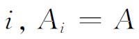
，则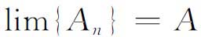
。（b）如果A是｛An｝的极限，则A也是｛An｝的每个无穷子序列的极限。
然后，弗雷歇对类L中的任何一个空间，引进了一系列的概念。例如一个集合E的导集E′，由这样的点构成，它们都是E中的序列的极限。E是闭的，如果E′包含在E中。E是完全的，如果E′＝E。E的一个点A叫做E的内点（狭义），如果A不是任何一个不在E中的序列的极限。集合E是紧的，如果或者E只有有限多个元素，或者E的每一个无穷子集至少有一个极限元素。如果E是闭的而且紧的，那么称E为极型的（extremal）（弗雷歇的紧是近代的相对列紧，而他的“极型的”是现在的列紧）。弗雷歇的第一个重要定理是闭区间套定理的推广：如果
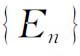
是由一个极型集的闭子集组成的单调下降序列，即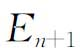
包含在En中，那么所有En的交是非空的。弗雷歇接着就考虑泛函（他称它们为泛函运算）。这是定义在一个集合E上的实值函数。他这样来定义泛函的连续性：泛函U称为在E的元素A处连续，如果对每个包含在E中并收敛到A的序列｛An｝都有
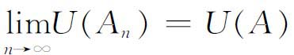
。他还引进了泛函的半连续性，这是贝尔（René Baire，1874—1932）在1899年(10)对普通函数引进的一个概念。U在E中是上半连续的，如果对一切上述的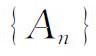
都有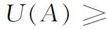
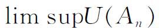
；它是下半连续的，如果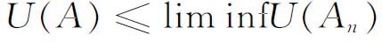
(11)。有了这些定义，弗雷歇就有可能证明关于泛函的许多定理。例如，每一个在极型集E上连续的泛函是有界的，并且在E上达到它的极大和极小。每一个在极型集E上上半连续的泛函是上有界的，而且在E上达到极大。
弗雷歇接着对泛函的集合和序列引进了一些概念，如一致收敛、拟一致收敛、紧致性和等度连续等。例如，泛函序列｛Un｝一致收敛到U，如果给定任一正数ε，只要n充分大并且与E中的A无关，就有
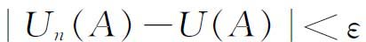
。这样他就可以证明过去对实函数得到的、现在推广到泛函的那些定理了。研究了空间类L之后，弗雷歇就定义较特殊的空间（如邻域空间），重新定义对于具有极限点的空间引进过的概念，并证明一些类似于上述定理的定理，但结果往往较好，因为这些空间有更多的性质。
最后他引进距离空间。在这样一个空间里，对于每一对点A和B，定义了一个函数，起着距离（écart）的作用并用（A，B）表示，它满足下列条件：
（a）
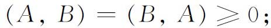
（b）
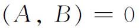
当且仅当A＝B；（c）
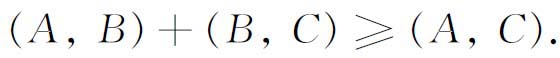
条件（c）称为三角不等式。他称这样的空间是类的。对于这类空间，弗雷歇也可以证明关于空间的以及定义在其上的泛函的许多定理，它们十分类似于过去对更一般的空间已证明了的结果。
弗雷歇给出了函数空间的某些例子。例如在同一区间I上连续的所有一元实变函数的全体所形成的集合，其中任意两个函数f和g的距离定义为
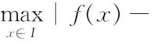
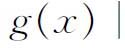
，它们构成类的一个空间。现在这个距离称为极大模。弗雷歇提出的另一个例子是实数序列的全体所构成的集合。如果
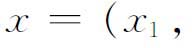
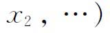
和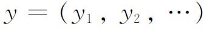
是任两个序列，那么x和y的距离定义为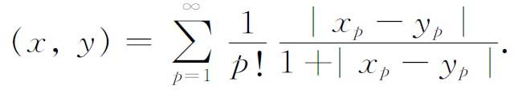
正如弗雷歇所说的，这是一个可数无穷维空间。
弗雷歇(12)在运用他的类空间的过程中，成功地给出了泛函的连续性、微分和可微性的定义。虽然这些定义对变分法并不是完全适用的，但他的微分定义却值得一提，因为它在事后被证明为满意的概念中是核心。他假设存在一个线性泛函
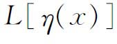
，使得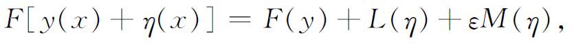
其中
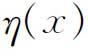
是y（x）的变分，M（η）是η（x）在［a，b］上的最大绝对值，而ε随M趋向于0。这时L（η）便是F（y）的微分。他还事先假定了F（y）的连续性，这却是在变分法的许多问题中所不能满足的。费希尔（Charles Albert Fischer，1884—1922）(13)后来改进了沃尔泰拉关于泛函微商的定义，使之确能适用于变分法中的泛函。泛函的微分由此可以通过微商来定义。
就变分法所需要的泛函性质的基本定义而论，其最终的确切表达是由莱斯蒂容（Elizabeth Le Stourgeon，1881—1971）给出的(14)。关键的概念，即泛函的微分，是弗雷歇定义的一种修正。泛函F（y）是说在y0（x）有微分，如果存在线性泛函L（η），使得对y0的邻域中的所有弧y0＋η都有关系式
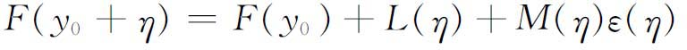
成立，其中M（η）是η和η′在区间［a，b］上的最大绝对值，ε（η）是和M（η）一起消失的量。她还定义了二阶微分。
莱斯蒂容和费希尔两人都从他们的微分定义推证了泛函有极小值存在的若干必要条件，这种条件属于可应用到变分法问题的一种类型。例如，泛函F（y）在y＝y0有极小的一个必要条件是对每一
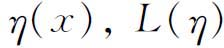
趋于零，其中η在［a，b］上连续且有一阶连续微商，还满足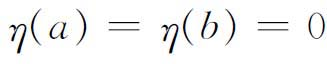
。从一阶微分消失的条件可以推出欧拉方程，同时再应用泛函二阶微分的定义（这是曾经提到过的几个作者已经给出过的），就可以推出变分法的雅可比条件的必要性。变分法所要求的泛函理论的决定性工作，至少在1925年以前，是由比萨和波洛尼亚大学教授托内利（Leonida Tonelli，1885—1946）完成的。他从1911年起就这个题目写了几篇论文，以后他发表了他的《变分法基础》（Fondamenti di calcolo delle variazioni，二卷，1922，1924），在其中他从泛函的观点来考虑问题。经典的理论大量依赖于微分方程的理论。托内利的目的是要用积分的极小曲线的存在定理代替微分方程的存在定理。在他的整个著作中，泛函的下半连续性的概念是一个基本的概念，因为那里的泛函是不连续的。
托内利首先处理曲线的集合，并给出保证一类曲线的极限曲线存在的诸定理。接下去的定理保证了通常的但是含参变量的积分
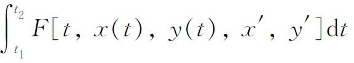
作为x（t）和y（t）的函数是下半连续的。（以后他考虑了更加基本的非参变量积分。）他为标准形式的问题导出了变分法的四个经典的必要条件。第二卷的重点是在半连续概念的基础上为一大类问题推导存在定理。这就是，给定了上述形式的一个积分，把它看成一个泛函，对它施加一些条件，并在所考虑的曲线类上也施加一些条件，他就证明了在这类曲线中存在一条曲线使积分达到极小。他的各定理涉及绝对极值和相对极值。
托内利的工作在某种程度上给微分方程带来了好处，因为他的存在定理隐含着微分方程解的存在性，这些方程在经典的方法中是用极小曲线来提供解的。然而，他的工作只限于变分法问题的基本类型。虽然这个抽象的研究途径被许多人接着做，但就泛函理论应用于变分法来说所取得的进展却是不大的。